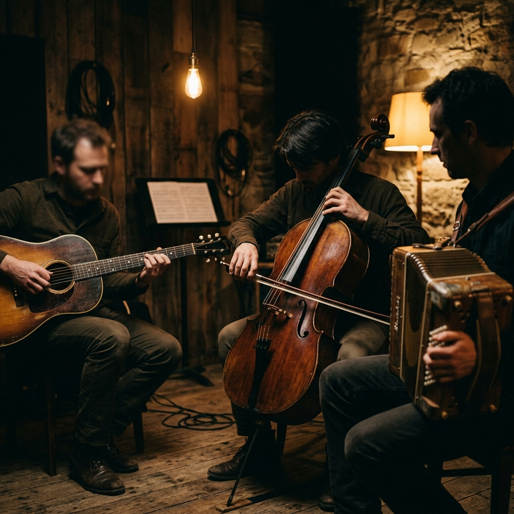

Nuestra Esencia
El Enzo Fernández Trío nace de la profundidad del litoral uruguayo, fusionando la tradición de la guitarra criolla con texturas contemporáneas de violonchelo y acordeón.
Con un repertorio de autoría propia y versiones de grandes maestros, la propuesta busca evocar los paisajes, el río y el viento que definen nuestra identidad sonora.
Su álbum debut "Vientos del Litoral" es un viaje instrumental que transita entre el folclore más puro y la libertad del lenguaje jazzístico.
Videos
Nuages (D. Reinhardt)
Bossal
Guitarra de agua
Galería

Contacto
Por contrataciones e información: